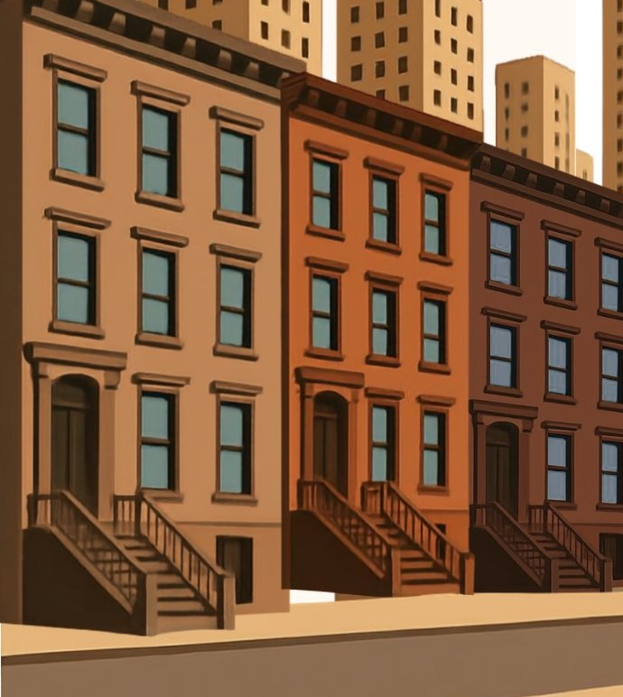

No lease, no utility bill, and no permanent address needed. A shelter can count as your voting residence.

Your residence is where you live now — even temporarily.
In New York, you do not need a permanent address, a lease, or a utility bill to register to vote. Under New York’s residence rules (N.Y. Election Law §5-104), the place you currently live — including a shelter — can count as your residence for voting.
You can register using the shelter where you stay as your residence. For the mailing address — where your voter registration card is sent — you can use the shelter, a P.O. box, or another reliable address where you can receive election mail.
Read more: NY voter info · Check your status · Coalition for the Homeless